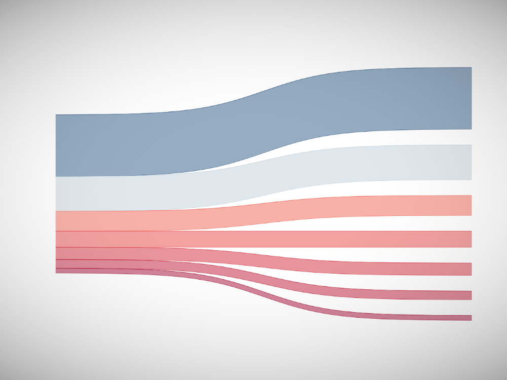
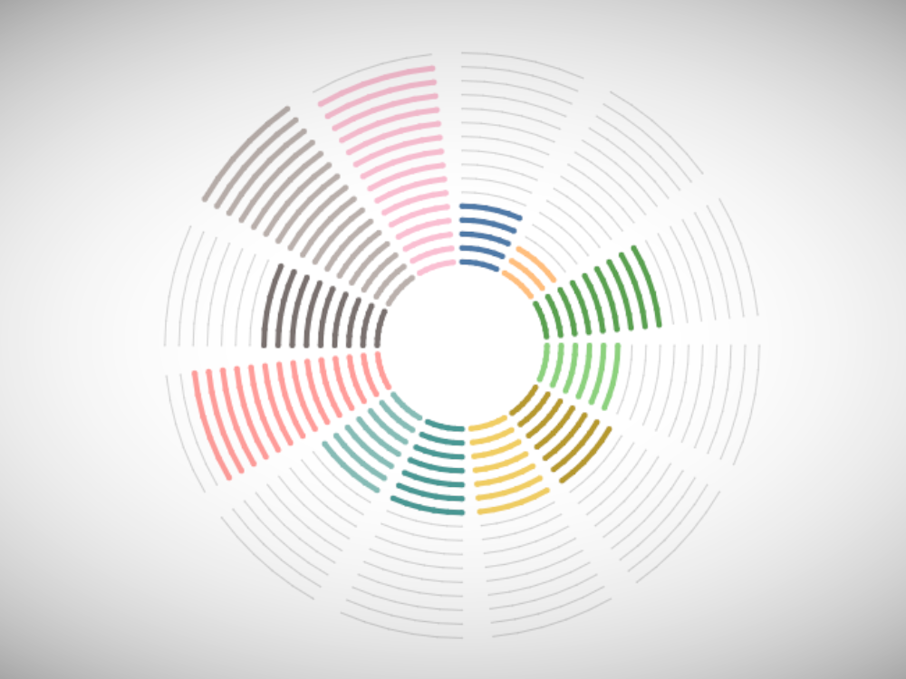
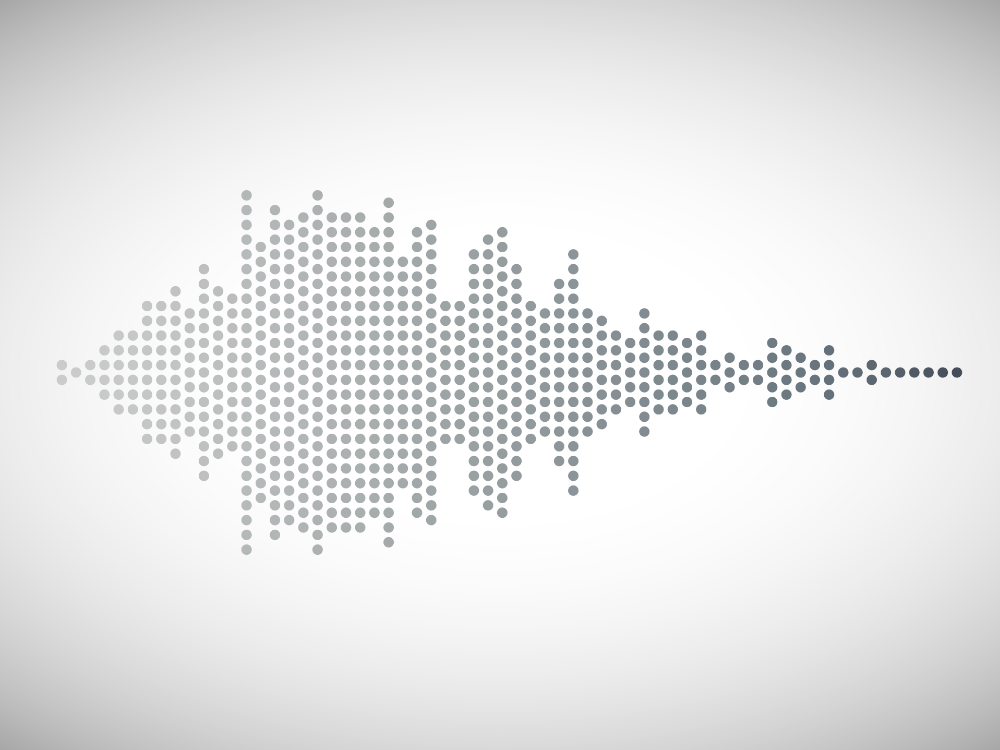
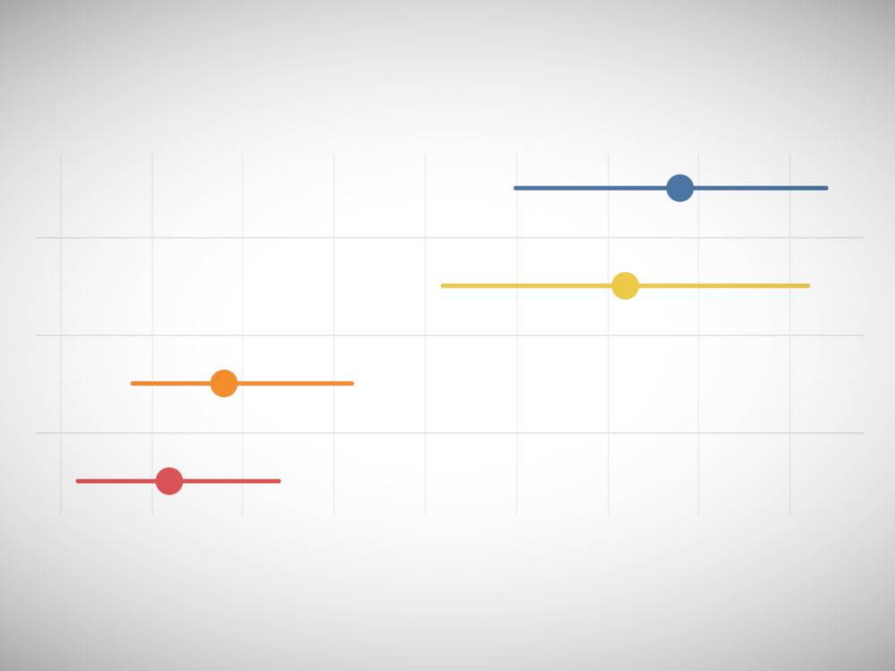
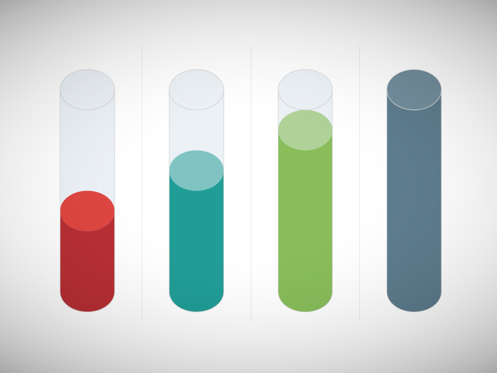
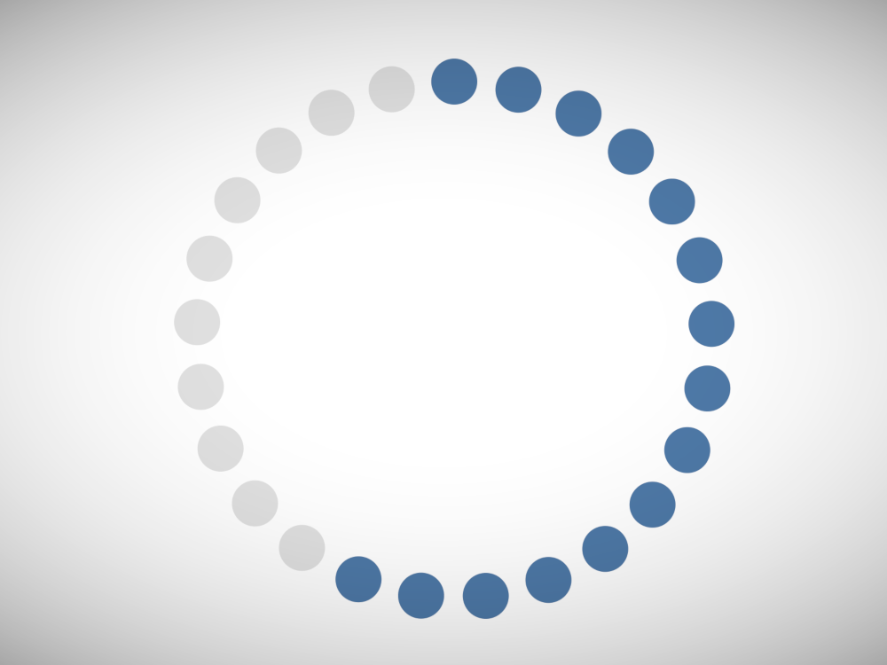
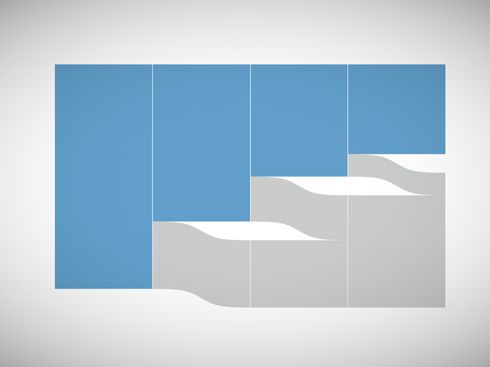
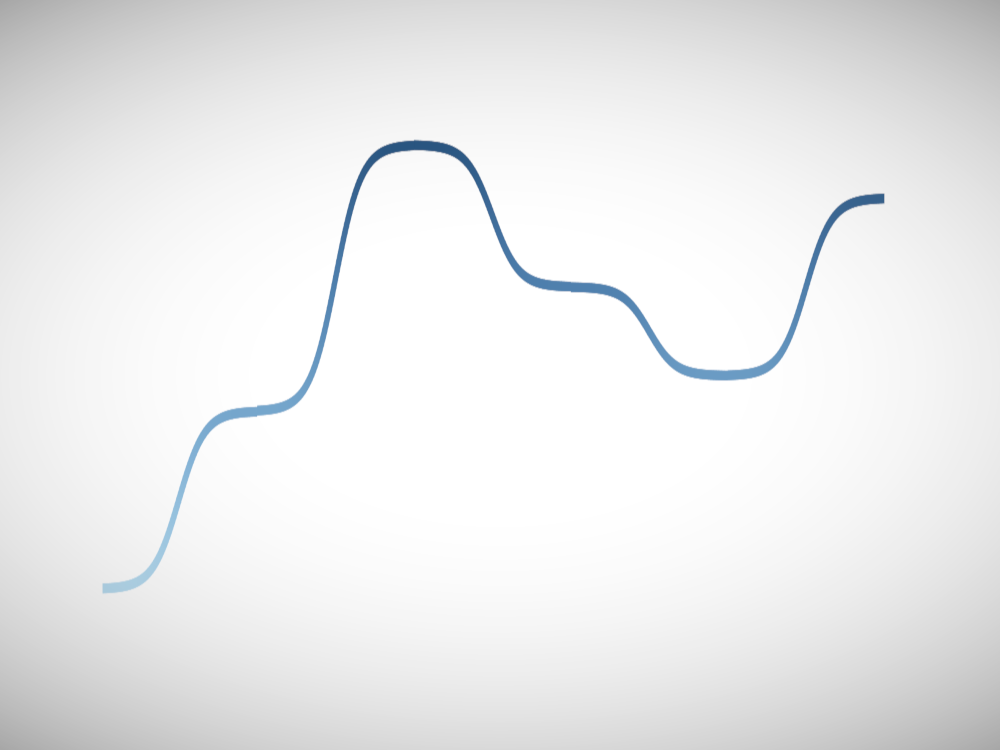
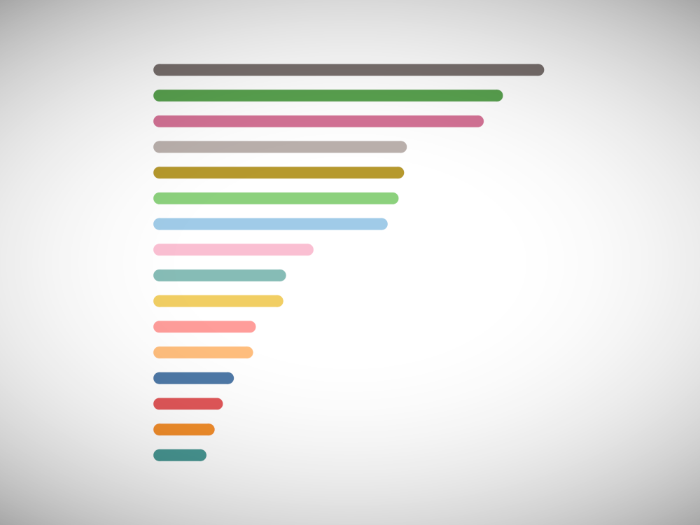

Tableau Data Viz Catalogue
Tableau Tutorials for creating all your required chart types
info_outline
search
Gauge Charts (With Arrow)more_vert
Rounded Gantt Chartsmore_vert

Single Level Sankey Diagrammore_vert
Podium Bar Chartsmore_vert
Curved Polar Chartsmore_vert
Sketchy Bar Chartsmore_vert

Radial Column Chartmore_vert

Wilkinson Plotsmore_vert
Tilted Bar Chartsmore_vert
Circular Network Chartsmore_vert
Jitter Stacked Bar Chartsmore_vert
Gradient Radial Bar Chartsmore_vert
Negative Space Area Chartsmore_vert
Multi-Level Dendrogram Chartsmore_vert
Multi-Level Dendrogram Chartsclose
Creating a Multi-Level Dendrogram Charts in Tableau
Half-Circle Timeline Chartsmore_vert
Negative Space Bar Chartsmore_vert
Spiral Stacked Line Chartsmore_vert
Petal Polygon Chartsmore_vert
Floating Bar Chartsmore_vert
Square Arc Chartsmore_vert
Curved Bar Chartsmore_vert
Dendrogram Charts (Rounded Bars)more_vert
Dendrogram Charts (Rounded Bars)close
Creating a Denderogram with Rounded Bar Chart in Tableau
Squred Spiral Column Chartsmore_vert
Dendrogram Charts (Single Level)more_vert
Dendrogram Charts (Single Level)close
Creating a Single Level Dendrogram Chart in Tableau
Variable Width Bar Chartsmore_vert
Spiral Column Chartsmore_vert
Completion Gantt Chartsmore_vert
Square Bump Chartsmore_vert

Error Margin Chartsmore_vert
Radial Jitter Bar Chartsmore_vert
Textured Bar Chartsmore_vert
Histogram with Normal Curvemore_vert
Gradient Pie Chartsmore_vert
Marrimekko Chartmore_vert
Floating Icon Bar Chartsmore_vert

Radial Column Chartsmore_vert
Gradient Bar Chartsmore_vert

Radial Stacked Bar Chartsmore_vert
Bar with Trend Chartsmore_vert
Volume Dial Chartsmore_vert
Half-Circle Gauge Chartsmore_vert
Calendar Circle Chartsmore_vert
Rounded Stacked Bar Chartsmore_vert
Layered Area Chartsmore_vert
Jitter Bar Chartsmore_vert
Spiral Hex Chartsmore_vert
Square Area Chartsmore_vert

Layered Filled Circle Chartsmore_vert
Curved Bar Chartsmore_vert
Triangle Bar Chartsmore_vert
Candlestick Chartsmore_vert
Sigmoid Area Chartsmore_vert
Connected Bar Chartsmore_vert
Arrow Doughnut Chartsmore_vert

Cylinder Chartsmore_vert
Circular Jitter Plotsmore_vert
Filled Circle Chartsmore_vert
Dot Quadrant Chartsmore_vert
Pyramid Step Chartsmore_vert
Thermometer Chartsmore_vert

Circle Dot Chartsmore_vert
Shaped Bar Chartsmore_vert
Radial Fan Chartsmore_vert
Connected Weighted Bump Chartsmore_vert
Connected Weighted Bump Chartsclose
Creating a Connected Weighted Bump Chart in Tableau
Sin-Dumbbell Chartsmore_vert
Radial Rounded Bar Chartsmore_vert
Radial Rounded Bar Chartsclose
Creating a Combined Radial and Rounded Bar Charts in Tableau
Rounded Doughnut Chartsmore_vert


Drop-Off Sankey Chartsmore_vert
Square Radial Bar Chartsmore_vert

Curved Line Chartsmore_vert
Half-Circle Chartsmore_vert

Rounded Bar Chartsmore_vert
Packed Circle Chartsmore_vert
Radial Bar Chartsmore_vert
Dual-Metric Doughnut Chartsmore_vert